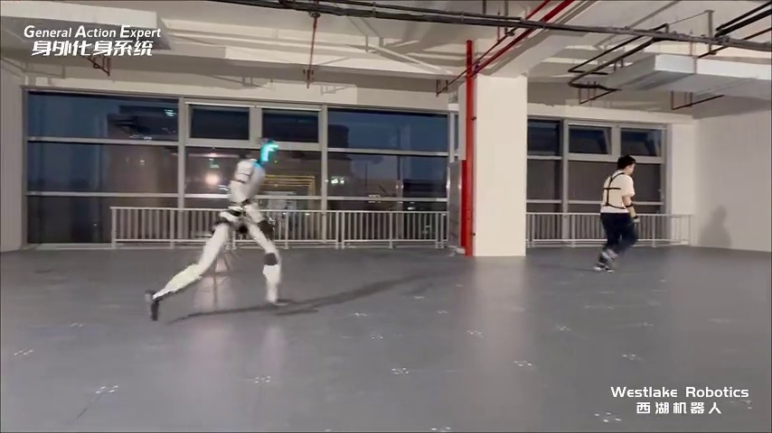

Anonymous review demo · ACM MM 2026 submission
NingBGM: Video Background Music Generation via Holistic Scene Understanding with Multi-Agent Collaboration
Abstract
Existing video-to-music generation methods primarily rely on single visual modality inputs, often failing to capture the rich multimodal information present in real-world scenarios. Consequently, the generated music frequently lacks semantic and emotional alignment with the scene. To address this, we propose NingBGM, a video background music generation framework based on multi-agent collaboration. This framework introduces a holistic scene representation that fuses multi-source information to model temporal dynamics, objects, semantics, emotions, and narrative logic, serving as a guiding input for music generation. NingBGM organizes agents into three specialized teams for requirements analysis, scene understanding, and music generation. Each team follows a collaborative mechanism of supervisor assignment, expert execution, and verifier validation to simulate professional creation workflows. Furthermore, a structured agent role definition and task design module allow general agents to rapidly transform into domain experts, translating high-level user intentions into executable micro-instructions. We also construct CSD-200, a multimodal holistic scene test set for video-to-music tasks, which fills a gap in fine-grained evaluation benchmarks. Experiments demonstrate that NingBGM achieves superior performance compared to baselines across multiple key metrics, validating the effectiveness of the multi-agent collaborative paradigm. Ablation studies further confirm that constructing holistic scenes through multimodal fusion is crucial for enhancing audio-visual synchronization.
Demo Overview

Disclaimer
Academic use. The model outputs and comparison materials are provided only for academic review and technical demonstration. They are not commercial services, endorsements, licenses, or guarantees.
Anonymity. Repository addresses, source-code links, author names, organization names, personal accounts, and contact information are withheld to preserve double-blind review.
Media materials. Original videos, images, audio clips, and related media are used as research examples for review. Visible captions have been anonymized to remove social handles, source links, and unnecessary references.
Release notes. Formal citation, source-code release, and additional project resources are intentionally omitted during review and can be added after the review process when appropriate.